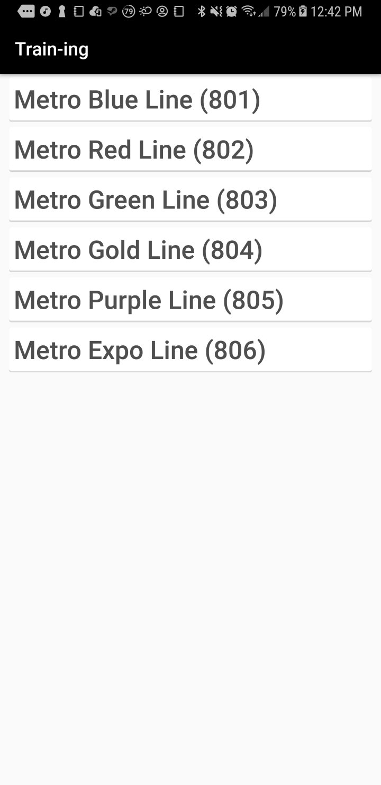

Train-ing is an Android-based information and chat system for Metro Rail Users.

Github Repository
1. It will allow users of the Metro Rail to get information like arrival time estimates and rail maitenance notifications.
2. Users will be able to interact in light-hearted conversation safely by providing anonymitity of a username-based chat system.
3. Users will be able to alert other users of suspicious activity aboard the Metro.
Adam U. Flores
Israel S. Grobin
Eric Aguirre
| Sprint | Sprint Date | Sprint Information | Feature Complete? |
|---|---|---|---|
| #1 | 03/01/18 | Get Metro Line and Stop Information | Yes |